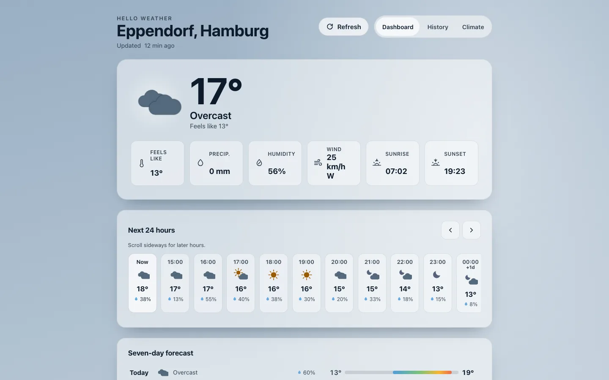
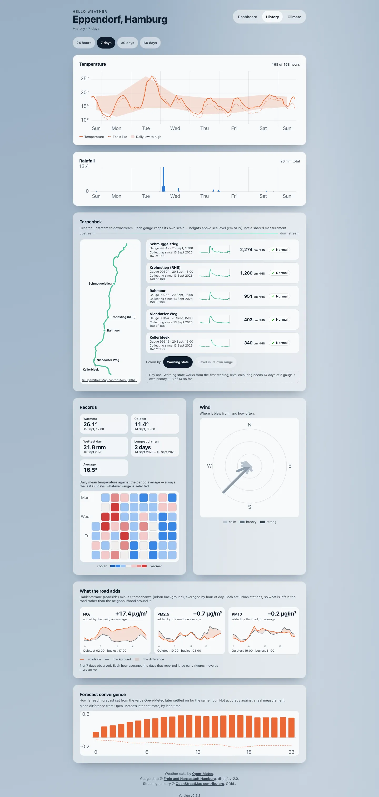

Hello Weather
A weather dashboard for one place: Eppendorf, in Hamburg.
It shows the forecast, the level of the small river that runs through the district, the air quality at three nearby measuring stations, and how this year's weather compares with the eighty-six years before it.
It runs on a NAS in a flat, for one household. There is nothing here to sign up for and nothing to install. This page explains what it does — and, in the second half, where every number on it comes from.

Dashboard
Current conditions sit at the top: temperature, what it feels like, precipitation, humidity, wind, and the day's sunrise and sunset. Below them the next twenty-four hours scroll sideways, then seven days.
Two more cards follow further down: the Tarpenbek's water level at five gauges, and air quality from three Hamburg stations. Both get explained properly in the second half of this page.
The background is painted from the current weather and time of day — overcast daylight, in the screenshot above — and the browser's own interface colour follows it. The view works from the keyboard, honours reduced-motion settings, and its light and dark palettes are contrast-tested rather than eyeballed.

History
Four ranges — twenty-four hours, seven days, thirty days, sixty days. The short ranges draw every hour; the long ones draw daily aggregates computed in the database.
Each block states its own coverage rather than quietly drawing whatever it has. "168 of 168 hours" means the week is complete; a gap says so instead of being smoothed over. Days that are missing hours stay visible but are excluded from extremes, and daily buckets handle the 23- and 25-hour days that clock changes produce.
Alongside temperature and rainfall there is a wind rose over sixteen sectors, extremes that only count whole days, a calendar heat map, and the Tarpenbek drawn as a stream that can be coloured by water level and scrubbed through time.


Climate
Five panels, each moving at its own pace. This day against its record redraws daily. This year so far gains a point a day. Water & dryness and Season & extremes track the running year. Long-term trend changes once a year.
The archive behind them reaches back to 1940, which is what makes the first panel possible: today's temperature is placed inside the distribution of every comparable day since then, rather than compared with a single date last year.


Built to be honest about what it doesn't know
Most of the work in this app went into the cases where data is missing, late, or wrong. Those cases are visible rather than papered over.
- Stale data says so. If the provider is unreachable, the last good reading is served with a banner explaining that it is old and when it was taken. With nothing usable at all, the API returns an error instead of a guess.
- A missing comparison stays missing. River level changes are measured against a real stored reading within half an hour of the target time. If there isn't one, the change is empty — not interpolated into something plausible.
- Scales wait until they mean something. Water levels are only shown on a normalised scale once a gauge has fourteen separate days of history. Until then the raw centimetre reading stands on its own.
- One failure stays one failure. A broken river gauge does not stale the forecast, and a climate sync failure does not touch current weather. Each source fails on its own.
- The location stays private. Coordinates, the address, query strings, client addresses and request headers never reach the logs or the cache keys. The public label is the district name, and that is all.
Underneath: FastAPI serving both the JSON API and the built single-page app, React and TypeScript in the browser, PostgreSQL for history, Redis as a short-lived cache and task broker, one background worker and one scheduler, all as a Docker Compose project on a NAS at home. The stream geometry is generated offline from public data and checked in as static values, so nothing about geography is fetched at runtime.
Rivers
The Tarpenbek is a small watercourse, a few metres across, that runs through the district and feeds into the Alster. Hamburg's flood warning service publishes water levels for gauges along it1, and the app reads them every fifteen minutes, keeping every measurement rather than only the latest one.
Five gauges are shown in upstream-to-downstream order. Each keeps its own scale, because the published figures are heights above sea level in centimetres: one gauge's number compared with another's tells you nothing. What is comparable is a gauge against itself, over time.
Why a change is a real measurement, or nothing
The app shows how much each gauge has moved over six, twelve and twenty-four hours. That change is the latest reading minus an actual stored reading from around the target time — within half an hour of it, and no further. When two readings are equally close, the later one wins.
If no reading exists inside that window, there is no change. The app does not interpolate between the readings on either side to produce a number. On a small stream that can rise quickly after rain, an interpolated level is a guess wearing the clothes of a measurement, and a guess is exactly what someone looking at a flood gauge does not want.
Why the colour scale arrives late
The stream diagram can be coloured by how high each gauge is running, which requires knowing what normal looks like there. The app builds that from the gauge's own history: the fifth and ninety-fifth percentiles of everything it has stored, with the current level placed between them.
That only switches on after a gauge has readings from fourteen separate days, and only if those two percentiles actually differ. Before then the colour scale is absent and the raw centimetre reading stands alone. A normalised scale built on two days of data would look authoritative and mean nothing. Warning levels, which come from the source rather than from accumulated history, are available from the first day.
Where the map comes from, hashes and all
The stream drawn on the history page is not a map tile and not a live query. It is generated offline from two public inputs — OpenStreetMap ways named Tarpenbek3 and the coordinates in Hamburg's gauge archive — projected, joined, checked for ordering, and committed as static values. At runtime the app fetches no tiles, loads no mapping library, and makes no geographic request at all.
Verifying that archive download produced an awkward result. The file that was downloaded and used hashes to one value. Hamburg's own catalogue metadata lists a different one for that resource:
a2f83f7711a59c8ef13fcc74988a52938f2cb51ea49e0002da1971e3859a80d6
7a63e4f829762ec0a65c42d9e94442d3dc94440299890cab798874f8b3146865
Both are recorded, and neither is presented as the winner. The tempting move is to quietly keep the hash that matches and describe the check as passed. It did not pass. Publishing one number would have turned an unresolved discrepancy into a claim of verification, which is worse than having no checksum at all — a reader would trust it more, on less.
Gauge data is published by Hamburg under the dl-de/by-2.0 licence2; the stream geometry is OpenStreetMap data under ODbL3. Both credits appear in the app itself, on every screen, because naming the source is a licence condition rather than a courtesy.
Air quality
The app shows two kinds of number that are easy to confuse. One is a measured concentration — how much of a pollutant is in the air, in micrograms per cubic metre. The other is an index: a single value from 1 to 5 summarising those concentrations into a verdict like "good" or "poor".
They come from different publications. The concentrations are measurements from the Umweltbundesamt's Air Data service4. Hamburg's own 1-to-5 index is published separately by the city's Luftmessnetz5. The Umweltbundesamt also computes an index of its own, and it is not the same thing as Hamburg's — so the app keeps the two apart and timestamps them independently, because they are revised on different schedules.
Three stations are shown: Niendorf, Sternschanze and Habichtstraße. They are not interchangeable. A station beside a busy road measures the road; an urban background station measures the air the district generally sits in. A traffic station reading higher than a background one is the instrument working, not a fault.
Recent observations are provisional. Values from the last hours can be revised once the operator has quality-checked them, so a number that changes after the fact has not gone wrong.
What an index does not tell you
A 1-to-5 index answers "is the air good right now". It does not answer whether a legal limit has been met, and the app never presents it as if it did.
German and European limits are not instantaneous thresholds. They are defined over specific averaging periods, with allowances for a permitted number of exceedances per year, and with separate targets for ozone. A day can look poor on the index without any limit being breached, and a limit can be breached across a year of days that each looked acceptable.
The World Health Organization's 2021 guidelines6 are stricter than the legal limits and are recommendations, not law. They also use their own conventions — a 99th-percentile rule for short-term values, and a six-month peak season for ozone — so a WHO figure and a legal figure are not directly comparable even when both are expressed in the same units.
Directive (EU) 2024/28817 has been in force since December 2024 and sets considerably stricter standards to be met by 2030, which member states must still implement nationally. This app does not apply those future standards to today's readings. When they take effect, the same measurements will be judged against a harder line.
Forecast quality
Written in Task 7.
Climate change
Written in Task 7.
Sources and licences
- Warndienst Binnenhochwasser Hamburg (LSBG), gauge readings. wabiha.de. Data licensed dl-de/by-2.0; attribution: Freie und Hansestadt Hamburg. Retrieved DATE.
- Datenlizenz Deutschland — Namensnennung 2.0. govdata.de/dl-de/by-2-0. Retrieved DATE.
- OpenStreetMap contributors, stream geometry, licensed ODbL 1.0. openstreetmap.org/copyright. Retrieved DATE.
- Umweltbundesamt, Air Data. luftdaten.umweltbundesamt.de. Umweltbundesamt mit Daten der Messnetze der Länder und des Bundes. Retrieved DATE.
- Freie und Hansestadt Hamburg, Institut für Hygiene und Umwelt, Luftmessnetz. hamburg.de/luftguetemessnetz. Retrieved DATE.
- World Health Organization, WHO global air quality guidelines (2021). who.int. Retrieved DATE.
- Directive (EU) 2024/2881 on ambient air quality and cleaner air for Europe. eur-lex.europa.eu. Retrieved DATE.